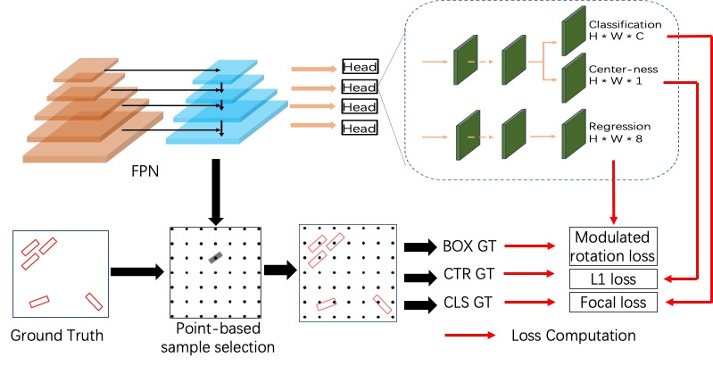
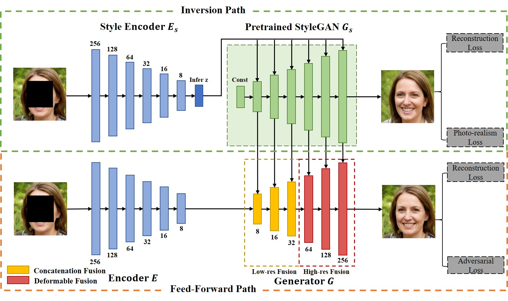
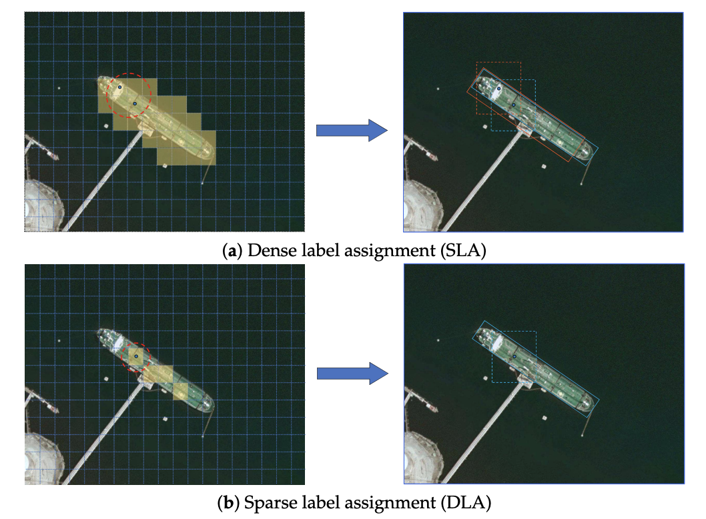
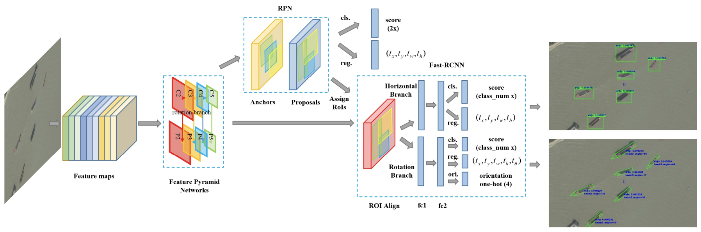

Publications

MMRotate: A Rotated Object Detection Benchmark using PyTorch
In Proceedings of the 30th ACM International Conference on Multimedia (ACM MM, CCF-A), Lisboa, Portugal, Open Source Software Competition, 2022


RSDet++: Point-based Modulated Loss for More Accurate Rotated Object Detection
IEEE Transactions on Circuits and Systems for Video Technology (TCSVT, CCF-B), 2022


SCRDet++: Detecting Small, Cluttered and Rotated Objects via Instance-Level Feature Denoising and Rotation Loss Smoothing
IEEE Transactions on Pattern Analysis and Machine Intelligence (TPAMI, CCF-A), 2022





On the Arbitrary-Oriented Object Detection: Classification based Approaches Revisited
International Journal of Computer Vision (IJCV, CCF-A), 2022


Optimization for Arbitrary-Oriented Object Detection via Representation Invariance Loss
IEEE Geoscience and Remote Sensing Letters (GRSL, CCF-C), 2021



Sparse Label Assignment for Oriented Object Detection in Aerial Images
In Remote Sensing, 2021


Dense Label Encoding for Boundary Discontinuity Free Rotation Detection
In Proceedings of the IEEE Computer Vision and Pattern Recognition (CVPR, CCF-A), Virtual, 2021

Learning Modulated Loss for Rotated Object Detection
In Proceedings of the Thirty-Five AAAI Conference on Artificial Intelligence (AAAI, CCF-A), Vancouver, Canada (Virtual), 2021


R3Det: Refined Single-Stage Detector with Feature Refinement for Rotating Object
In Proceedings of the Thirty-Five AAAI Conference on Artificial Intelligence (AAAI, CCF-A), Vancouver, Canada (Virtual), 2021


Arbitrary-Oriented Object Detection with Circular Smooth Label
In Proceedings of the European Conference on Computer Vision (ECCV, CCF-B), Glasgow, Scotland, UK (Virtual), 2020

SCRDet: Towards More Robust Detection for Small, Cluttered and Rotated Objects
In Proceedings of the IEEE International Conference on Computer Vision (ICCV, CCF-A), Seoul, Korea, 2019


Rethinking Classification and Localization for Cascade R-CNN
In Proceedings of the 30th British Machine Vision Conference (BMVC, CCF-C), Cardiff, Wales, UK, 2019

Position detection and direction prediction for arbitrary-oriented ships via multitask rotation region convolutional neural network
In IEEE Access, 2018


Object Detection With Head Direction in Remote Sensing Images Based on Rotational Region CNN
In IEEE International Geoscience and Remote Sensing Symposium (IGARSS), 2018

A Densely Connected End-to-End Neural Network for Multiscale and Multiscene SAR Ship Detection
In IEEE Access, 2018

Automatic Ship Detection in Remote Sensing Images from Google Earth of Complex Scenes Based on Multiscale Rotation Dense Feature Pyramid Networks
In Remote Sensing, 2018